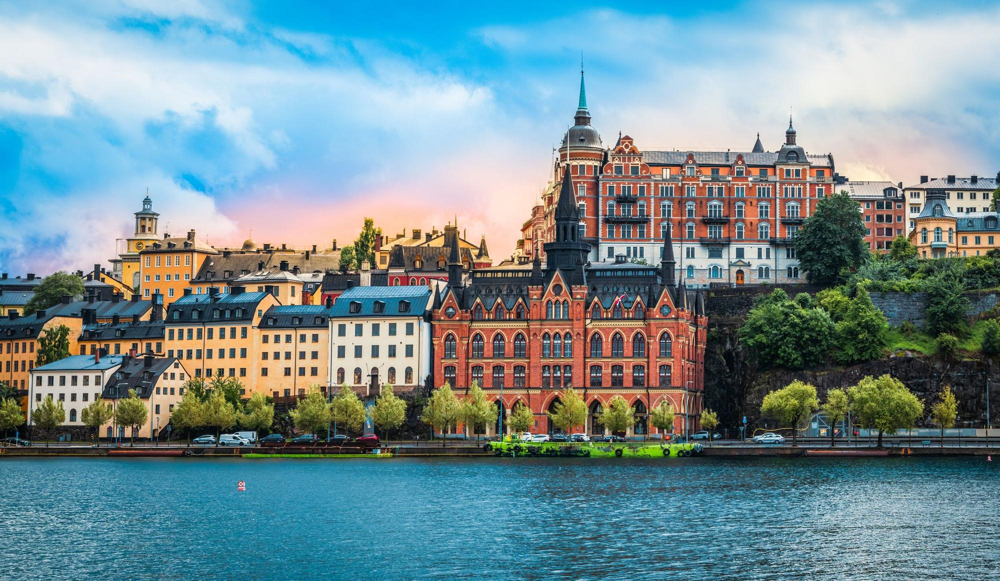

Descubre la magia de Estocolmo con nuestra ruta exclusiva. Desde la historia vikinga hasta la modernidad nórdica, vive una experiencia inolvidable en la capital sueca.
Lo que dicen nuestros visitantes
"La ruta por Estocolmo fue una experiencia increíble, ¡definitivamente la recomiendo!"
"Todo estuvo perfectamente organizado, aprendí mucho sobre la ciudad. ¡Gracias!"
"Una forma única de conocer Estocolmo. ¡No me lo perdería!"